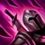
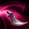
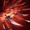

Katarina Du Couteau
La Daga Siniestra

Información acerca de Katarina
- Nació en la Región de Noxus.
- Fue entrenada desde pequeña como una Asesina.
- Mostró un excelente talento para su oficio.
- Es Orgullosa y Sádica.
- Debido a su arrogancia, cometrió un error que le valió su cicatriz en el ojo izquierdo.
Información In-Game acerca de Katarina
- Coste en la tienda: 3150 790
- Rol: Asesino
- Dificultad: Alta
- Recurso: Ninguno
- Alcance: Cuerpo a Cuerpo
- Carril: Central
Habilidades
-  Pasiva - Voracidad: Si Katarina inflige daño a un enemigo y este muere poco después, los enfriamientos restantes de sus habilidades se reducirán significativamente. Si Katarina recoge una Daga, la usará para acuchillar a todos los enemigos cercanos e infligir daño mágico.
-  Q - Hoja Rebotante: Katarina arroja una daga hacia el objetivo que luego rebota hacia otros enemigos cercanos antes de aterrizar en el suelo.
- W - Preparación: Katarina obtiene una ráfaga de velocidad de movimiento y arroja una daga por el aire directamente sobre ella.
- E - Shunpo: Katarina se transporta hacia el objetivo y lo daña si es un enemigo. Si no, daña al enemigo más cercano.
-  R - Loto Mortal: Katarina se vuelve una ráfaga filosa que causa daño masivo mientras canaliza hacia los 3 enemigos más cercanos.